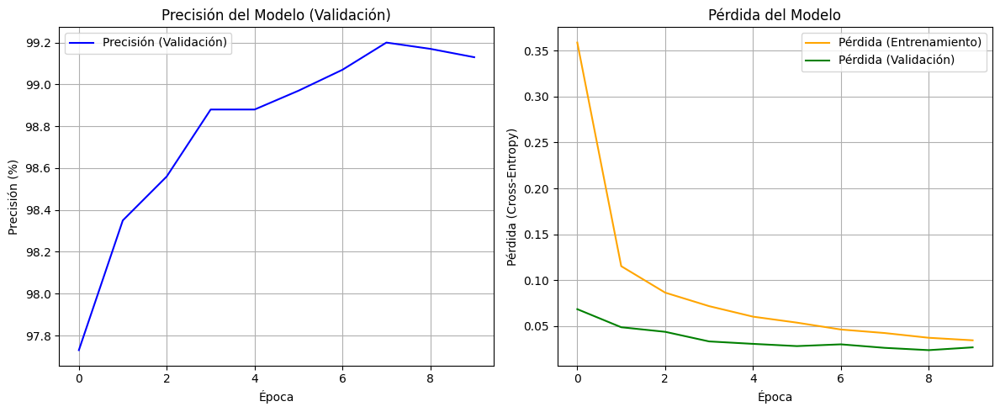

import torch
import torch.nn as nn
import torch.optim as optim
from torch.utils.data import DataLoader
from torchvision import datasets
from torchvision.transforms import ToTensor
import matplotlib.pyplot as plt
import numpy as np
# --- 0. Definir Hiperparámetros y Dispositivo ---
EPOCHS = 10
BATCH_SIZE = 128
LEARNING_RATE = 0.001
# Configurar el dispositivo (GPU si está disponible, sino CPU)
device = torch.device("cuda" if torch.cuda.is_available() else "cpu")
print(f"Usando dispositivo: {device}")
# --- 1. Carga y Preparación de Datos ---
# PyTorch usa 'transforms' para preprocesar datos.
# ToTensor() convierte la imagen PIL/Numpy a un Tensor
# y normaliza los píxeles del rango [0, 255] a [0, 1].
transform = ToTensor()
# Descargar datos de entrenamiento
train_dataset = datasets.MNIST(
root="./data", # Directorio donde se guardan los datos
train=True,
download=True,
transform=transform
)
# Descargar datos de prueba
test_dataset = datasets.MNIST(
root="./data",
train=False,
download=True,
transform=transform
)
# Crear 'DataLoaders' para manejar los lotes (batches)
train_loader = DataLoader(
dataset=train_dataset,
batch_size=BATCH_SIZE,
shuffle=True # Mezclar los datos de entrenamiento
)
test_loader = DataLoader(
dataset=test_dataset,
batch_size=BATCH_SIZE,
shuffle=False
)
# Verificación de las dimensiones (N_lote, Canales, Altura, Ancho)
# Note la diferencia con Keras (N, H, W, C)
data_iter = iter(train_loader)
images, labels = next(data_iter)
print(f"\nDimensiones de un lote de imágenes: {images.shape}") # (128, 1, 28, 28)
print(f"Dimensiones de un lote de etiquetas: {labels.shape}") # (128)
# --- 2. Construcción de la Arquitectura CNN ---
# En PyTorch, los modelos se definen como clases que heredan de nn.Module
class SimpleCNN(nn.Module):
def __init__(self):
super(SimpleCNN, self).__init__()
# Bloque Extractor 1
# nn.Conv2d(canales_entrada, canales_salida, kernel_size)
self.conv1 = nn.Conv2d(in_channels=1, out_channels=32, kernel_size=3, stride=1, padding=1)
self.relu1 = nn.ReLU()
self.pool1 = nn.MaxPool2d(kernel_size=2, stride=2)
# Bloque Extractor 2
self.conv2 = nn.Conv2d(in_channels=32, out_channels=64, kernel_size=3, stride=1, padding=1)
self.relu2 = nn.ReLU()
self.pool2 = nn.MaxPool2d(kernel_size=2, stride=2)
# Bloque Clasificador (MLP)
self.flatten = nn.Flatten()
# Cálculo de la entrada a la capa densa:
# (N, 64, 7, 7) -> 64 * 7 * 7 = 3136
self.fc1 = nn.Linear(in_features=64 * 7 * 7, out_features=128)
self.relu3 = nn.ReLU()
self.dropout = nn.Dropout(0.5)
self.fc2 = nn.Linear(in_features=128, out_features=10) # 10 clases de salida
# El método 'forward' define cómo fluyen los datos a través de las capas
def forward(self, x):
# Bloque 1
x = self.conv1(x)
x = self.relu1(x)
x = self.pool1(x)
# Bloque 2
x = self.conv2(x)
x = self.relu2(x)
x = self.pool2(x)
# Clasificador
x = self.flatten(x)
x = self.fc1(x)
x = self.relu3(x)
x = self.dropout(x)
x = self.fc2(x) # Salida de logits (sin softmax)
return x
# Instanciar el modelo y moverlo al dispositivo (GPU/CPU)
model = SimpleCNN().to(device)
print(model)
# --- 3. Definición de Pérdida y Optimizador ---
# nn.CrossEntropyLoss aplica internamente Softmax y la pérdida
# Por eso, el modelo debe retornar los logits "crudos".
criterion = nn.CrossEntropyLoss()
# Optimizador Adam
optimizer = optim.Adam(model.parameters(), lr=LEARNING_RATE)
# --- 4. Bucle de Entrenamiento ---
# Listas para guardar el historial de la métrica
train_losses = []
val_losses = []
val_accuracies = []
print("\nIniciando entrenamiento...")
for epoch in range(EPOCHS):
# ---- Fase de Entrenamiento ----
model.train() # Poner el modelo en modo entrenamiento (activa Dropout)
running_loss = 0.0
for batch_idx, (data, targets) in enumerate(train_loader):
# Mover datos al dispositivo
data = data.to(device)
targets = targets.to(device)
# 1. Poner a cero los gradientes
optimizer.zero_grad()
# 2. Forward pass (predicción)
outputs = model(data)
# 3. Calcular la pérdida
loss = criterion(outputs, targets)
# 4. Backward pass (retropropagación)
loss.backward()
# 5. Actualizar pesos
optimizer.step()
running_loss += loss.item()
avg_train_loss = running_loss / len(train_loader)
train_losses.append(avg_train_loss)
# ---- Fase de Validación ----
model.eval() # Poner el modelo en modo evaluación (desactiva Dropout)
running_val_loss = 0.0
correct = 0
total = 0
# Desactivar el cálculo de gradientes para la validación
with torch.no_grad():
for data, targets in test_loader:
data = data.to(device)
targets = targets.to(device)
outputs = model(data)
loss = criterion(outputs, targets)
running_val_loss += loss.item()
# Calcular la precisión
_, predicted = torch.max(outputs.data, 1)
total += targets.size(0)
correct += (predicted == targets).sum().item()
avg_val_loss = running_val_loss / len(test_loader)
val_losses.append(avg_val_loss)
accuracy = 100 * correct / total
val_accuracies.append(accuracy)
print(f"Época [{epoch+1}/{EPOCHS}] - "
f"Pérdida (Entrenamiento): {avg_train_loss:.4f} - "
f"Pérdida (Validación): {avg_val_loss:.4f} - "
f"Precisión (Validación): {accuracy:.2f}%")
print("Entrenamiento finalizado.")
# --- 5. Visualización de Resultados ---
plt.figure(figsize=(12, 5))
# Gráfico de Precisión (usando val_accuracies)
plt.subplot(1, 2, 1)
plt.plot(val_accuracies, label='Precisión (Validación)', color='blue')
plt.title('Precisión del Modelo (Validación)')
plt.xlabel('Época')
plt.ylabel('Precisión (%)')
plt.legend()
plt.grid(True)
# Gráfico de Pérdida
plt.subplot(1, 2, 2)
plt.plot(train_losses, label='Pérdida (Entrenamiento)', color='orange')
plt.plot(val_losses, label='Pérdida (Validación)', color='green')
plt.title('Pérdida del Modelo')
plt.xlabel('Época')
plt.ylabel('Pérdida (Cross-Entropy)')
plt.legend()
plt.grid(True)
plt.tight_layout()
plt.show()Usando dispositivo: cuda100%|██████████| 9.91M/9.91M [00:01<00:00, 4.98MB/s]
100%|██████████| 28.9k/28.9k [00:00<00:00, 305kB/s]
100%|██████████| 1.65M/1.65M [00:00<00:00, 1.90MB/s]
100%|██████████| 4.54k/4.54k [00:00<00:00, 26.5MB/s]
Dimensiones de un lote de imágenes: torch.Size([128, 1, 28, 28])
Dimensiones de un lote de etiquetas: torch.Size([128])
SimpleCNN(
(conv1): Conv2d(1, 32, kernel_size=(3, 3), stride=(1, 1), padding=(1, 1))
(relu1): ReLU()
(pool1): MaxPool2d(kernel_size=2, stride=2, padding=0, dilation=1, ceil_mode=False)
(conv2): Conv2d(32, 64, kernel_size=(3, 3), stride=(1, 1), padding=(1, 1))
(relu2): ReLU()
(pool2): MaxPool2d(kernel_size=2, stride=2, padding=0, dilation=1, ceil_mode=False)
(flatten): Flatten(start_dim=1, end_dim=-1)
(fc1): Linear(in_features=3136, out_features=128, bias=True)
(relu3): ReLU()
(dropout): Dropout(p=0.5, inplace=False)
(fc2): Linear(in_features=128, out_features=10, bias=True)
)
Iniciando entrenamiento...
Época [1/10] - Pérdida (Entrenamiento): 0.3588 - Pérdida (Validación): 0.0685 - Precisión (Validación): 97.73%
Época [2/10] - Pérdida (Entrenamiento): 0.1153 - Pérdida (Validación): 0.0489 - Precisión (Validación): 98.35%
Época [3/10] - Pérdida (Entrenamiento): 0.0866 - Pérdida (Validación): 0.0439 - Precisión (Validación): 98.56%
Época [4/10] - Pérdida (Entrenamiento): 0.0718 - Pérdida (Validación): 0.0334 - Precisión (Validación): 98.88%
Época [5/10] - Pérdida (Entrenamiento): 0.0604 - Pérdida (Validación): 0.0308 - Precisión (Validación): 98.88%
Época [6/10] - Pérdida (Entrenamiento): 0.0539 - Pérdida (Validación): 0.0283 - Precisión (Validación): 98.97%
Época [7/10] - Pérdida (Entrenamiento): 0.0464 - Pérdida (Validación): 0.0302 - Precisión (Validación): 99.07%
Época [8/10] - Pérdida (Entrenamiento): 0.0425 - Pérdida (Validación): 0.0264 - Precisión (Validación): 99.20%
Época [9/10] - Pérdida (Entrenamiento): 0.0374 - Pérdida (Validación): 0.0239 - Precisión (Validación): 99.17%
Época [10/10] - Pérdida (Entrenamiento): 0.0346 - Pérdida (Validación): 0.0270 - Precisión (Validación): 99.13%
Entrenamiento finalizado.